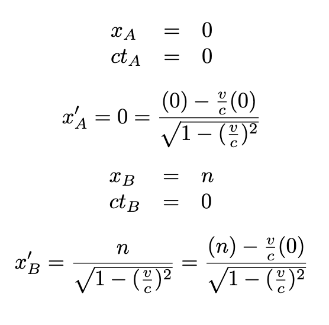

Just as there are some discrepancies between perspectives when it comes to time, distance also behaves differently from classical mechanics under relativity. Using a similar setup to last time, let’s have event A at x=0, ct=0, and event B at x=n, ct=0 (perspective K). Again using Lorentz transformations, we can compute x’ and ct’ for A and B:
Subtract to get the distance between the two points:
And again, notice that when v=0, length is preserved between perspectives.
v/c = -0.5Δx' (K') =
Δct' (K') =
spacetime distance (K) =
spacetime distance (K') =